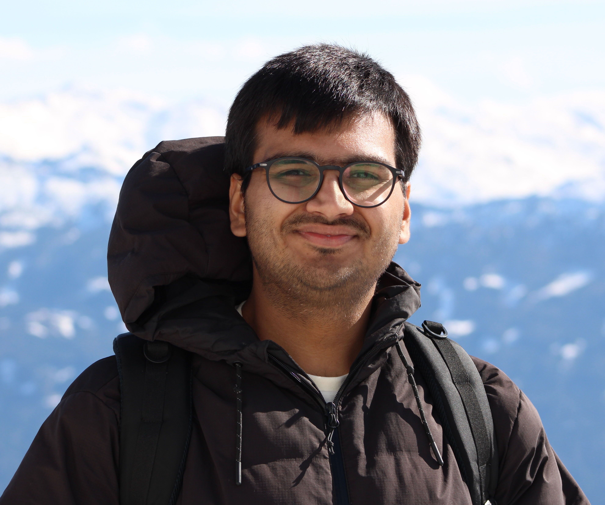

I am Anmol Kumar, a stellar astrophysicist at the University of St Andrews, United Kingdom. My primary area of research is the Sun, its hot atmosphere – the corona – and the accelerating solar wind. Prior to coming to St Andrews, I did a dual-degree bachelor's and master's program in physics at the Indian Institute of Science Education and Research (IISER) Kolkata, India, with a dissertation on space physics at the Center of Excellence in Space Sciences India (CESSI).
As a young academic, I have had the opportunity to probe some of the longstanding problems in solar physics – solar wind acceleration and coronal heating – combining satellite observations and state-of-the-art numerical simulations. More specifically, I am currently studying magnetohydrodynamic (MHD) waves and switchbacks as pathways of transporting magnetic energy from the solar interior to its corona and the wind. As I finish my doctoral studies in St Andrews in March 2026, I am looking forward to post-doctoral opportunities along similar lines.
Apart from research, I enjoy playing table tennis; I have had the privilege of representing almost every organization that I have been a part of – right from the club level to the national level. It was only during my highschool days that I developed an interest in physics and hence my career trajectory. More recently, I have become an avid language learner; I am currently at an intermediate level in French (au niveau intermédiaire en français) and a beginner in Italian (un principiante in italiano). What fasicnates me the most is the universality of language and how human understanding has evolved with a language. Additionally, moving to a new country in 2022 has taught me the basics of culinary sciences as I mostly experiment with (and yearn for) Indian food.